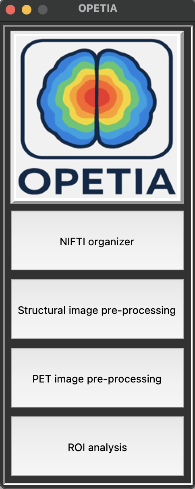

Installation on Ubuntu
OPETIA can be installed on Ubuntu systems using the following steps:
Install Python 3.8 or higher
Ensure you have Python installed on your system. You can check your Python version by running in a terminal:
python3 --version
If Python is not installed, you can install it using:
sudo apt update
sudo apt install python3 python3-pip
Install Required Python Packages
Install the required Python packages using pip. You can do this by running:
sudo apt-get update
sudo apt-get install python3-tk
sudo apt-get install eog
Install FSL
OPETIA relies on FSL for image processing. You can install FSL by following the instructions on the FSL website: FSL Installation Guide.
Clone the OPETIA Repository
Clone the OPETIA repository from GitHub:
git clone https://github.com/taha-parsayan/OPETIA.git
Navigate to the OPETIA Directory
Change to the OPETIA directory:
cd OPETIA
Run OPETIA
You can run OPETIA by executing the following command:
python3 OPETIA.py
This will launch the OPETIA graphical user interface.
{kind=link}